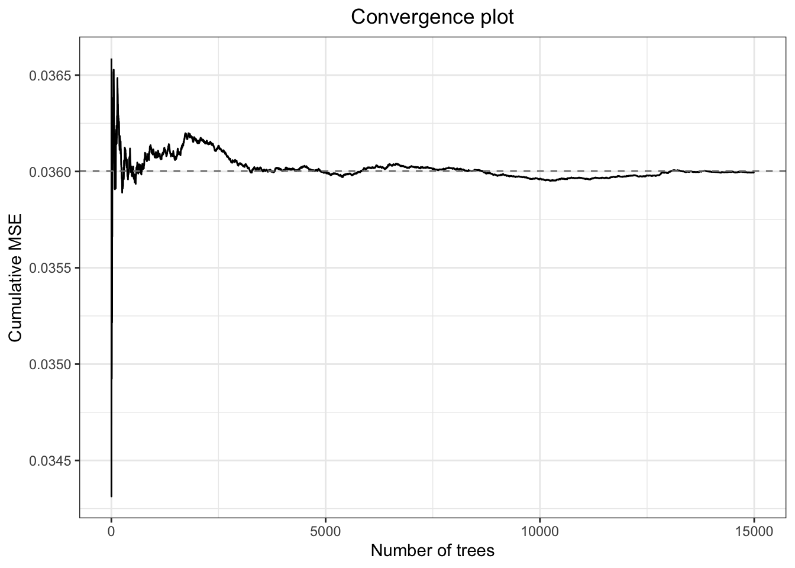
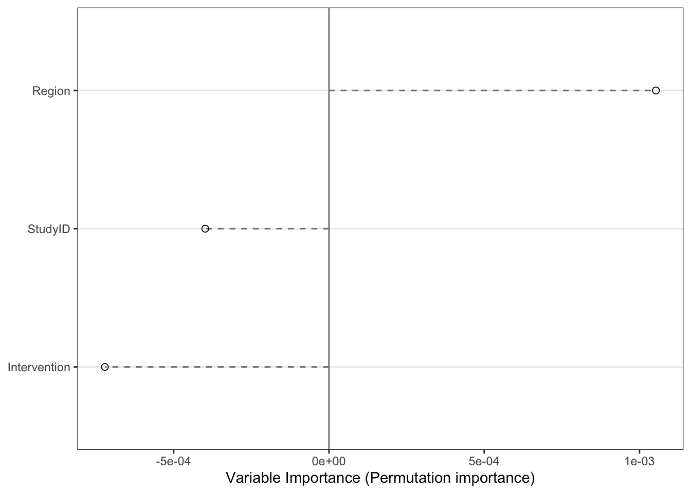
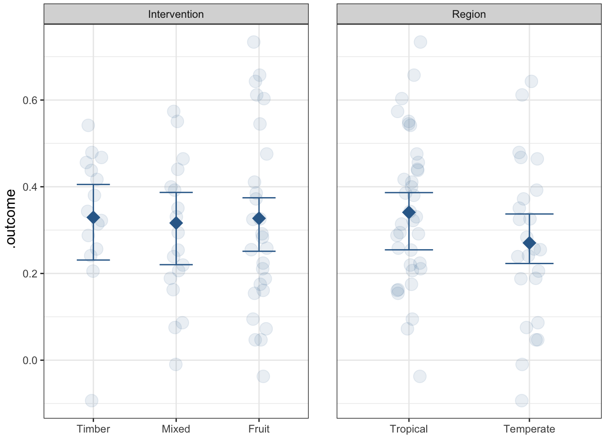

Chapter 2 Comparative meta-analytic methods for evidence synthesis
This chapter is designed to provide a comparative exploration of different meta-analytic approaches using the metafor, meta, and brms packages in R. The objective is to understand how the choice of methods (e.g., fixed-effect vs. random-effects models) and different effect size metrics (Standardized Mean Difference, Risk Ratios, etc.) can impact the interpretation of results. We will utilize a variety of datasets to illustrate how these choices influence conclusions, highlighting key interpretative aspects when heterogeneity and study-level variations are present.
By examining multiple datasets and applying different statistical techniques, we will underscore the importance of selecting appropriate methods based on the characteristics of the data, including heterogeneity among studies and the nature of the effect sizes being analyzed.
Prerequisites
You should have a basic understanding of meta-analysis concepts and be familiar with R. If you haven’t yet installed the necessary R packages, run the following commands:
#install.packages(c("tidyverse", "metafor", "dmetar", "meta", "metadat", "ggplot2", "reactable", "ggstar", "ggpubr"))2.1 Equal-Effects Model
2.1.1 Example Data
Consider the meta-analysis by Molloy et al. (2014), which examines the relationship between conscientiousness and medication adherence. We can compute the r-to-z transformed correlation coefficient and corresponding sampling variances using the metafor package:
The dataset contains the following columns: authors, year, sample size (ni), correlation coefficient (ri), transformed coefficient (yi), and sampling variance (vi).
2.1.2 Fitting the Equal-Effects Model
We can fit an equal-effects model with rma():
##
## Equal-Effects Model (k = 16)
##
## logLik deviance AIC BIC AICc
## 5.4330 38.1595 -8.8659 -8.0933 -8.5802
##
## I^2 (total heterogeneity / total variability): 60.69%
## H^2 (total variability / sampling variability): 2.54
##
## Test for Heterogeneity:
## Q(df = 15) = 38.1595, p-val = 0.0009
##
## Model Results:
##
## estimate se zval pval ci.lb ci.ub
## 0.1252 0.0170 7.3642 <.0001 0.0919 0.1585 ***
##
## ---
## Signif. codes: 0 '***' 0.001 '**' 0.01 '*' 0.05 '.' 0.1 ' ' 1This outputs the estimated effect size, heterogeneity statistics (I², H²), and a test for heterogeneity.
Next, we fit the same model using lm() by specifying the inverse of the sampling variances as weights:
##
## Call:
## lm(formula = yi ~ 1, data = dat, weights = 1/vi)
##
## Weighted Residuals:
## Min 1Q Median 3Q Max
## -3.1919 -1.0719 0.6674 1.3173 2.4695
##
## Coefficients:
## Estimate Std. Error t value Pr(>|t|)
## (Intercept) 0.12518 0.02711 4.617 0.000335 ***
## ---
## Signif. codes: 0 '***' 0.001 '**' 0.01 '*' 0.05 '.' 0.1 ' ' 1
##
## Residual standard error: 1.595 on 15 degrees of freedom2.1.3 Comparison of Results
Coefficient Comparison: The estimated intercept from
lm()matches that fromrma(), although it’s rounded differently.Standard Errors: The standard error from
lm()differs becauselm()assumes weights are only known up to a proportionality constant (σ²e). This error can be demonstrated by extracting the estimated error variance from thelmobject and refitting the model withrma():
##
## Equal-Effects Model (k = 16)
##
## I^2 (total heterogeneity / total variability): 0.00%
## H^2 (total variability / sampling variability): 1.00
##
## Test for Heterogeneity:
## Q(df = 15) = 15.0000, p-val = 0.4514
##
## Model Results:
##
## estimate se zval pval ci.lb ci.ub
## 0.1252 0.0271 4.6171 <.0001 0.0720 0.1783 ***
##
## ---
## Signif. codes: 0 '***' 0.001 '**' 0.01 '*' 0.05 '.' 0.1 ' ' 1This shows that adjusting the standard errors to account for the estimated error variance results in consistent estimates across both functions.
2.2 Random-Effects Model
2.2.1 Fitting the Random-Effects Model
We can fit a random-effects model using rma() as follows:
##
## Random-Effects Model (k = 16; tau^2 estimator: REML)
##
## logLik deviance AIC BIC AICc
## 8.6096 -17.2191 -13.2191 -11.8030 -12.2191
##
## tau^2 (estimated amount of total heterogeneity): 0.0081 (SE = 0.0055)
## tau (square root of estimated tau^2 value): 0.0901
## I^2 (total heterogeneity / total variability): 61.73%
## H^2 (total variability / sampling variability): 2.61
##
## Test for Heterogeneity:
## Q(df = 15) = 38.1595, p-val = 0.0009
##
## Model Results:
##
## estimate se zval pval ci.lb ci.ub
## 0.1499 0.0316 4.7501 <.0001 0.0881 0.2118 ***
##
## ---
## Signif. codes: 0 '***' 0.001 '**' 0.01 '*' 0.05 '.' 0.1 ' ' 1Next, we try fitting the same model with the lme() function from the nlme package, specifying a variance function for fixed variances:
library(nlme)
dat$study <- 1:nrow(dat)
res.lme <- lme(yi ~ 1, random = ~ 1 | study, weights = varFixed(~ vi), data=dat)
summary(res.lme)## Linear mixed-effects model fit by REML
## Data: dat
## AIC BIC logLik
## -8.781569 -6.657418 7.390784
##
## Random effects:
## Formula: ~1 | study
## (Intercept) Residual
## StdDev: 0.06818354 1.259548
##
## Variance function:
## Structure: fixed weights
## Formula: ~vi
## Fixed effects: yi ~ 1
## Value Std.Error DF t-value p-value
## (Intercept) 0.1415557 0.03071906 16 4.608073 3e-04
##
## Standardized Within-Group Residuals:
## Min Q1 Med Q3 Max
## -1.1596768 -0.6903414 0.1964221 0.7117538 1.4616798
##
## Number of Observations: 16
## Number of Groups: 16Alternatively, we can use the lmer() function from the lme4 package
library(lme4)
res.lmer <- lmer(yi ~ 1 + (1 | study), weights = 1/vi, data=dat,
control=lmerControl(check.nobs.vs.nlev="ignore", check.nobs.vs.nRE="ignore"))
summary(res.lmer)## Linear mixed model fit by REML ['lmerMod']
## Formula: yi ~ 1 + (1 | study)
## Data: dat
## Weights: 1/vi
## Control:
## lmerControl(check.nobs.vs.nlev = "ignore", check.nobs.vs.nRE = "ignore")
##
## REML criterion at convergence: -14.8
##
## Scaled residuals:
## Min 1Q Median 3Q Max
## -1.1597 -0.6903 0.1964 0.7117 1.4617
##
## Random effects:
## Groups Name Variance Std.Dev.
## study (Intercept) 0.004649 0.06818
## Residual 1.586457 1.25955
## Number of obs: 16, groups: study, 16
##
## Fixed effects:
## Estimate Std. Error t value
## (Intercept) 0.14156 0.03072 4.6082.2.2 Comparison of Results
Intercept Differences: The estimated intercepts from
lme()andlmer()do not differ from the estimate obtained viarma().Standard Errors: The standard errors, t-values, and p-values also show discrepancies for similar reasons as mentioned earlier—
lme()andlmer()treat sampling variances as unknown beyond a proportionality constant.
To illustrate, we can factor this constant into the sampling variances and refit the model with rma():
##
## Random-Effects Model (k = 16; tau^2 estimator: REML)
##
## tau^2 (estimated amount of total heterogeneity): 0.0046 (SE = 0.0049)
## tau (square root of estimated tau^2 value): 0.0682
## I^2 (total heterogeneity / total variability): 36.82%
## H^2 (total variability / sampling variability): 1.58
##
## Test for Heterogeneity:
## Q(df = 15) = 24.0532, p-val = 0.0642
##
## Model Results:
##
## estimate se zval pval ci.lb ci.ub
## 0.1416 0.0307 4.6081 <.0001 0.0813 0.2018 ***
##
## ---
## Signif. codes: 0 '***' 0.001 '**' 0.01 '*' 0.05 '.' 0.1 ' ' 1This yields results consistent with those from lme().
2.2.2.1 Comparison with the meta Package
The meta package provides a robust alternative for conducting meta-analyses, featuring a range of built-in functions that cater to both fixed-effect and random-effects models. This package streamlines the analysis of various effect sizes, making it accessible for researchers. For example, we can execute a meta-analysis using the metagen() function from the meta package as follows:
library(meta)
res.meta <- metagen(TE = yi, seTE = sqrt(vi), data = dat, sm = "SMD")
summary(res.meta)## SMD 95%-CI %W(common) %W(random)
## 1 0.1892 [-0.0011; 0.3796] 3.1 5.7
## 2 0.1634 [ 0.0917; 0.2352] 21.6 10.5
## 3 0.3541 [ 0.0823; 0.6259] 1.5 3.6
## 4 0.3316 [ 0.1395; 0.5238] 3.0 5.6
## 5 0.2769 [ 0.0409; 0.5128] 2.0 4.4
## 6 0.0000 [-0.2489; 0.2489] 1.8 4.1
## 7 0.1768 [ 0.0269; 0.3267] 4.9 7.1
## 8 0.0500 [-0.0590; 0.1591] 9.3 8.9
## 9 0.2661 [ 0.0018; 0.5304] 1.6 3.8
## 10 0.0100 [-0.0607; 0.0807] 22.2 10.6
## 11 -0.0902 [-0.3595; 0.1790] 1.5 3.7
## 12 0.3884 [ 0.1795; 0.5974] 2.5 5.1
## 13 0.0000 [-0.1844; 0.1844] 3.3 5.9
## 14 0.1511 [ 0.0663; 0.2360] 15.4 10.0
## 15 0.2448 [ 0.0873; 0.4022] 4.5 6.8
## 16 0.0400 [-0.2089; 0.2889] 1.8 4.1
##
## Number of studies: k = 16
##
## SMD 95%-CI z p-value
## Common effect model 0.1252 [0.0919; 0.1585] 7.36 < 0.0001
## Random effects model 0.1499 [0.0881; 0.2118] 4.75 < 0.0001
##
## Quantifying heterogeneity:
## tau^2 = 0.0081 [0.0017; 0.0378]; tau = 0.0901 [0.0412; 0.1944]
## I^2 = 60.7% [32.1%; 77.2%]; H = 1.59 [1.21; 2.10]
##
## Test of heterogeneity:
## Q d.f. p-value
## 38.16 15 0.0009
##
## Details on meta-analytical method:
## - Inverse variance method
## - Restricted maximum-likelihood estimator for tau^2
## - Q-Profile method for confidence interval of tau^2 and tauOne of the key advantages of the meta package is its user-friendly syntax, which simplifies the process of conducting meta-analyses. Additionally, it integrates functions for visualizing results, such as forest plots, directly within its framework, enhancing the interpretability of the findings.
2.2.2.2 Bayesian Meta-Analysis
Bayesian meta-analysis presents a flexible framework that accommodates the incorporation of prior distributions and quantifies uncertainty in a comprehensive manner. By employing the brms package, we can specify a Bayesian random-effects model as follows:
library(brms)
# Define the response variable and the standard error
# Replace 'yi' with your actual response variable and 'se' with the appropriate standard error variable
response_var <- "yi" # Change this to your response variable name
se_var <- "sqrt(vi)" # Calculate the standard error (if vi is the variance)
# Fit the Bayesian random-effects model with specified priors
bayes_model <- brm(
formula = paste0(response_var, " | se(", se_var, ") ~ 1 + (1 | study)"),
data = dat,
family = gaussian,
prior = c(
prior(normal(0, 1), class = "Intercept"), # Prior for the intercept
prior(cauchy(0, 1), class = "sd") # Prior for the standard deviation of the random effect
),
iter = 200,
warmup = 100,
cores = 4,
chains = 2,
seed = 14
)
# Summarize the results
summary(bayes_model)This Bayesian approach enables us to derive posterior distributions for the effect sizes, facilitating a more nuanced interpretation of uncertainty compared to traditional frequentist methods. By leveraging Bayesian techniques, researchers can integrate prior knowledge and obtain more robust estimates, especially in cases where sample sizes are limited or when study results exhibit significant variability.
2.2.3 Meta-Forest Analysis: A Comparison with Classical Meta-Analytic Models
Meta-forest analysis is a machine-learning-based extension of meta-analysis that addresses the limitations of traditional meta-analytic models. In standard approaches like meta-regression, we assume a linear relationship between moderators and the effect sizes, which can oversimplify the true patterns within the data. Meta-forest, on the other hand, leverages the power of random forests to capture nonlinear interactions and complex relationships between moderators and outcomes, providing a deeper understanding of heterogeneity.
2.2.3.1 Key Differences and Advantages
Handling Complex and Nonlinear Relationships:
Traditional meta-regression models fit a single linear equation to explain the relationship between effect sizes and moderators. This approach works well for straightforward datasets but struggles when the effects of moderators are nonlinear or when there are interactions between variables. Meta-forest overcomes these limitations by utilizing decision trees, which split the data into multiple regions and fit localized models, effectively capturing nonlinearities and interactions that would be missed otherwise.No Assumptions on Functional Form:
Classical models require specifying the functional form of the relationship a priori (e.g., linear or quadratic). If the chosen form is incorrect, the model can lead to biased or misleading conclusions. Meta-forest avoids this issue by being entirely data-driven, learning the shape of the relationships directly from the data without requiring these assumptions.Resilience to Overfitting:
While adding more moderators to a standard meta-regression model can quickly lead to overfitting, especially in small datasets, meta-forest models are designed to mitigate overfitting through cross-validation and ensemble averaging. This robustness is crucial when dealing with a large number of potential moderators, allowing researchers to explore multiple variables without risking model instability.Variable Importance and Feature Selection:
One of the most valuable outputs from a meta-forest model is the variable importance score. Unlike classical models, which may produce ambiguous results when variables are collinear or interact with each other, meta-forest provides a clear ranking of which moderators contribute the most to explaining heterogeneity. This feature is particularly beneficial when performing exploratory analyses or when the moderator space is large and uncertain.Partial Dependence Plots for Interpretation:
Meta-forest offers visual tools like partial dependence plots that show the marginal effect of each moderator while accounting for the influence of other variables. This allows researchers to interpret the role of each moderator in context, which is challenging to achieve with standard meta-regression models.
2.2.3.2 Potential Drawbacks of Meta-Forest
Despite its strengths, meta-forest also has some drawbacks:
Lack of Inference Statistics:
Unlike classical models, meta-forest does not provide p-values or confidence intervals for effect size estimates. While this is acceptable for exploratory analyses, it can be limiting if formal hypothesis testing is required.Higher Complexity and Computational Cost:
The complexity of meta-forest models requires more computational resources and time, especially for large datasets or numerous moderators. Researchers may need to balance the improved flexibility against increased computational demand.Limited Applicability for Small Datasets:
Meta-forest is most effective when there is a substantial number of studies and a diverse set of moderators. For small datasets, classical methods like mixed-effects models might be more appropriate due to their simpler structure and ease of interpretation.
2.2.3.3 Practical Application: When to Use Meta-Forest?
Meta-forest is an ideal tool when dealing with exploratory analyses or when the relationships between moderators and effect sizes are unknown or suspected to be nonlinear. It is particularly useful for:
Exploring datasets with many potential moderators where interactions are likely.
Identifying key predictors of heterogeneity when prior knowledge is limited.
Providing a preliminary understanding of complex datasets before fitting more traditional models.
However, for datasets where linear assumptions are well-supported and computational efficiency is a concern, classical methods like meta-regression remain preferable.
2.2.3.4 Example of Implementing a Meta-Forest Model
Below is a demonstration of how to fit a meta-forest model and assess the relative importance of moderators:
# Load required libraries
library(metaforest)
library(caret)
# Hypothetical dataset: Replace this with your own meta-analysis data
set.seed(123)
data_agro <- data.frame(
yi = rnorm(60, 0.3, 0.2), # Simulated effect sizes
vi = min(0.01,rnorm(60, 0.1, 0.05)), # Variances of the effect sizes
Intervention = sample(c("Fruit", "Mixed", "Timber"), 60, replace = TRUE),
StudyID = rep(1:15, each = 4), # 15 unique studies
Region = sample(c("Tropical", "Temperate"), 60, replace = TRUE)
)
# Step 1: Run initial MetaForest model with many trees to check convergence
initial_model <- MetaForest(
formula = yi ~ Intervention + Region,
data = data_agro,
study = "StudyID",
whichweights = "random", # Use random-effects weighting scheme
num.trees = 15000 # Set a high number of trees for convergence
)
# Step 2: Plot convergence trajectory (Mean Squared Error vs. Number of Trees)
plot(initial_model)
# Step 3: Tune MetaForest model using cross-validation with `caret`
# Define the parameter grid for tuning
tuning_grid <- expand.grid(
whichweights = c("random", "fixed", "unif"),
mtry = 1:2, # Number of variables to possibly split at in each node
min.node.size = 2:5 # Minimum size of terminal nodes
)
# Setup 10-fold cross-validation
grouped_cv <- trainControl(method = "cv", index = groupKFold(data_agro$StudyID, k = 10))
# Train MetaForest model using `caret` for optimal tuning
tuned_model <- train(
y = data_agro$yi,
x = data_agro[, c("Intervention", "Region", "StudyID", "vi")],
method = ModelInfo_mf(), # MetaForest method setup for `caret`
trControl = grouped_cv, # Cross-validation setup
tuneGrid = tuning_grid, # Grid of tuning parameters
num.trees = 5000 # Number of trees for final model
)
# Step 4: Examine the optimal tuning parameters and model performance
best_params <- tuned_model$results[which.min(tuned_model$results$RMSE), ]
print(best_params)## whichweights mtry min.node.size RMSE Rsquared MAE RMSESD
## 20 unif 1 5 0.1813407 0.1106552 0.1465791 0.03107815
## RsquaredSD MAESD
## 20 0.1610125 0.03347646# Step 5: Assess the final model and visualize results
final_model <- tuned_model$finalModel
# R² from out-of-bag predictions (OOB R² indicates model fit for unseen data)
r2_oob <- final_model$forest$r.squared
cat("OOB R-squared: ", r2_oob)## OOB R-squared: -0.07849894
# Step 6: Visualize partial dependence of top moderators
PartialDependence(final_model, vars = names(final_model$forest$variable.importance)[1:2], rawdata = TRUE, pi = 0.95)
2.2.3.5 Handling Random Structures and Weights in Meta-Forest Models
Meta-forest models handle random structures and weights differently from traditional meta-analysis models:
Random Effects: Traditional models explicitly incorporate random effects to model between-study variability. Meta-forest, however, relies on the structure of decision trees to capture variability implicitly. While this can account for some heterogeneity, it does not separate fixed and random components as effectively as mixed-effects models.
Weights: Classical meta-analyses use inverse variance weighting to prioritize studies with higher precision. Meta-forest can integrate study weights similarly during the tree-fitting process, ensuring that precise studies have more influence. However, unlike static weights in classical models, meta-forest adjusts them adaptively during iterations, making it more suitable for complex interactions and nonlinear patterns.
2.3 Conclusion
In summary, while the lm(), lme(), and lmer() functions can fit various linear models, they are not appropriate for meta-analysis due to their assumptions about the error variances. The rma() function is specifically designed for meta-analytic contexts, ensuring that known sampling variances are correctly utilized, resulting in reliable estimates and standard errors. Additionally, the meta package provides an accessible alternative for meta-analyses, while Bayesian methods using brms allow for flexible modeling and uncertainty quantification.
2.4 Practical implementations
2.4.1 Example 1: fixed vs. random Meta-Analysis models
The first dataset explores the impact of two effect size measures: Standardized Mean Difference (SMD) and Log Risk Ratios (lnRR). We apply different models and compare the results to identify variations in interpretations:
- Calculation of effect-sizes
dat <- metadat::dat.curtis1998
# Standardized mean differences
SMD <- escalc(measure = "SMD", n1i = dat$n1i, n2i = dat$n2i, m1i = dat$m1i, m2i = dat$m2i, sd1i = dat$sd1i, sd2i = dat$sd2i)
# Ln(RR)
lnRR <- escalc(measure = "ROM", n1i = dat$n1i, n2i = dat$n2i, m1i = dat$m1i, m2i = dat$m2i, sd1i = dat$sd1i, sd2i = dat$sd2i)- Model Comparison:
# Fixed-Effect Model (SMD):
fixed_SMD <- rma(yi = SMD$yi, vi = SMD$vi, method = "FE", data = dat)
fixed_lnRR <- rma(yi = lnRR$yi, vi = lnRR$vi, method = "FE", data = dat)
# random effect models
random_m_SMD <- rma(yi = SMD$yi, vi = SMD$vi, method = "REML", data = dat)
random_m_lnRR <- rma(yi = lnRR$yi, vi = lnRR$vi, method = "REML", data = dat)- Extraction and comparisons of the results
# Extract relevant results for comparison
model_comparison <- data.frame(
Model = c("Fixed Effect (SMD)", "Random Effect (SMD)", "Fixed Effect (lnRR)", "Random Effect (lnRR)"),
Estimate = c(fixed_SMD$b, random_m_SMD$b, fixed_lnRR$b, random_m_lnRR$b),
`95% CI Lower` = c(fixed_SMD$ci.lb, random_m_SMD$ci.lb, fixed_lnRR$ci.lb, random_m_lnRR$ci.lb),
`95% CI Upper` = c(fixed_SMD$ci.ub, random_m_SMD$ci.ub, fixed_lnRR$ci.ub, random_m_lnRR$ci.ub),
Tau2 = c(NA, random_m_SMD$tau2, NA, random_m_lnRR$tau2),
I2 = c(NA, random_m_SMD$I2, NA, random_m_lnRR$I2),
p.value = c(fixed_SMD$pval, random_m_SMD$pval, fixed_lnRR$pval, random_m_lnRR$pval)
)
# Affichage des résultats sous forme de tableau interactif avec reactable
model_comparison## Model Estimate X95..CI.Lower X95..CI.Upper Tau2
## 1 Fixed Effect (SMD) 1.0200088 0.9104184 1.129599 NA
## 2 Random Effect (SMD) 1.2845731 1.0619587 1.507187 0.74922116
## 3 Fixed Effect (lnRR) 0.2088297 0.1981535 0.219506 NA
## 4 Random Effect (lnRR) 0.2552978 0.2164785 0.294117 0.02620568
## I2 p.value
## 1 NA 2.382399e-74
## 2 69.73831 1.173970e-29
## 3 NA 0.000000e+00
## 4 88.89735 5.133963e-38- Interpretation: The contrast in point estimates and confidence intervals between the SMD and lnRR models underscores the impact of effect size metrics on study-level variability. This comparison reveals how different metrics can shift the weight of certain studies and alter pooled estimates.
Exercise: Model comparison
Task: Fit three different models (Fixed, Random, and Three-Level) using the dataset.
Objective: Compare their tau² estimates and overall pooled effect sizes.
Guiding questions:
How does heterogeneity (I²) change across these models?
Does the model choice impact the significance of moderators?
2.4.2 Example 2: Comparing Heterogeneity across models
Here, we calculate Risk Differences (RD) and explore the impact of between-study variance estimators (DL, REML) on heterogeneity.
- Random-Effects Model Using DerSimonian-Laird (DL):
- Random-Effects Model Using REML:
- Extraction and comparisons of the results
# Extract relevant results for comparison
model_comparison2 <- data.frame(
Model = c("DL", "REML"),
Estimate = c(res_dl$b, res_reml$b),
`95% CI Lower` = c(res_dl$ci.lb, res_reml$ci.lb),
`95% CI Upper` = c(res_dl$ci.ub, res_reml$ci.ub),
Tau2 = c(res_dl$tau2, res_reml$tau2),
I2 = c(res_dl$I2, res_reml$I2),
p.value = c(res_dl$pval, res_reml$pval)
)
# Affichage des résultats sous forme de tableau interactif avec reactable
model_comparison2## Model Estimate X95..CI.Lower X95..CI.Upper Tau2 I2 p.value
## 1 DL 0.2530579 0.2168455 0.2892704 0.02164714 86.86638 1.065093e-42
## 2 REML 0.2552978 0.2164785 0.2941170 0.02620568 88.89735 5.133963e-38Interpretation: The DL estimator is more sensitive to small-study effects, potentially overestimating between-study heterogeneity, while the REML tends to yield more conservative estimates, resulting in narrower confidence intervals. This comparison is crucial for understanding when each method might be more appropriate.
Exercise: Model estimator impact
Task: Apply multiple heterogeneity estimators (
DL,HE,SJ,REML) to the dataset.Objective: Compare I², tau², and Q-statistics across estimators.
Guiding Questions:
Which estimator produces the most conservative tau² estimate?
Does the choice of estimator affect the overall significance?
2.4.3 Example 3: Multi-Level meta-Analysis with hierarchical Data
In hierarchical data structures, three-level models allow us to account for dependencies within and across clusters (e.g., experiments and individual observations).
- Three-Level model setup:
dat<-cbind(dat, lnRR)
# Three-level meta-analysis
three_level_m <- rma.mv(yi = yi, V = vi, random = list(~1 | id, ~1 | paper), data = dat)
# Two level meta-analysis
two_level_m <- rma.mv(yi = yi, V = vi, random = list(~1 | id), data = dat)- Faire le tableau de comparaison de outputs
- AIC pour sélection de modèles
Interpretation: The three-level model reveals the extent of within- and between-experiment variance. Visualizing these results with orchard plots helps disentangle which levels contribute most to the observed heterogeneity.
Exercise: multi-Level meta-Analysis
Task: Fit a series of multi-level models with different group-level random effects.
Objective: Determine how accounting for more complex structures impacts model fit and tau² partitioning.
Guiding Questions:
How does the inclusion of nested random effects change the intraclass correlation?
Which levels (experiment vs. within-group) contribute most to the variance?
2.4.4 Model Selection in Meta-Analysis
Choosing the best model in meta-analysis involves comparing multiple competing models using selection criteria like AIC (Akaike Information Criterion), AICc (Corrected AIC), BIC (Bayesian Information Criterion), and other model performance metrics. This helps identify a model that balances goodness-of-fit and model complexity. The following section covers strategies for selecting the most appropriate model, including fixed and random effects, based on theoretical knowledge or statistical tests.
2.4.4.1 Selection Criteria for Model Comparison
AIC (Akaike Information Criterion): Measures the trade-off between model fit and complexity:
\[ \text{AIC} = 2k - 2\log(\hat{L}) \]
where \(k\) is the number of model parameters, and \(\hat{L}\) is the maximum likelihood value. A lower AIC indicates a more parsimonious model.
AICc (Corrected AIC): Adjusted for small sample sizes to avoid overfitting:
\[ \text{AICc} = \text{AIC} + \frac{2k(k+1)}{n - k - 1} \]
It should be used when \(n/k\) is small (< 40), where \(n\) is the number of observations and \(k\) the number of parameters.
BIC (Bayesian Information Criterion): Applies a stronger penalty for the number of parameters:
\[ \text{BIC} = k\log(n) - 2\log(\hat{L}) \]
BIC often favors simpler models, making it suitable when working with large sample sizes.
Likelihood Ratio Tests and ANOVA: To directly compare nested models, likelihood ratio tests or
anovacan be used. This approach quantifies if adding (or removing) parameters significantly improves model fit.
2.4.4.2 Choosing Between Fixed and Random-Effects Models
The decision between using a fixed-effect or random-effects model depends on either theoretical considerations or statistical testing:
Theoretical Justification: Choose a fixed-effect model if you expect a common effect size across all studies (e.g., homogeneous study contexts or interventions). Select a random-effects model when heterogeneity among studies is anticipated (e.g., varying contexts, differing methods).
Statistical Testing:
- Heterogeneity Tests: Use tests like Cochran’s Q-test or \(I^2\) statistics to detect significant variability between studies. High \(I^2\) or a significant Q-test indicates that a random-effects model is likely more appropriate.
- ANOVA for Model Comparison: When comparing nested models (e.g., fixed-effects vs. random-effects),
anova()can be used to test whether the inclusion of random effects significantly improves the model fit.
2.4.4.3 Comparing Models: Fixed and Random Structures
When fitting mixed-effects models, choosing between different random and fixed structures is a crucial step. Typically, the process involves:
Start with the Random Structure:
Define the random effects first to capture variance due to grouping or clustering (e.g., study-level random effects, site-level random effects).
Use the likelihood ratio test (
anova()) to compare models with and without each random component:model1 <- rma.mv(yi, vi, random = ~ 1 | paper, data = dat) model2 <- rma.mv(yi, vi, random = ~ 1 | paper/id, data = dat) anova(model1, model2)## ## df AIC BIC AICc logLik LRT pval QE ## Full 3 -8.2204 -0.3750 -7.9730 7.1102 769.0185 ## Reduced 2 104.0570 109.2872 104.1794 -50.0285 114.2774 <.0001 769.0185
This step allows you to determine if additional random components (e.g., study vs. nested study/site effects) are justified.
Here,
anova()will test if the more complex model (model_random) explains significantly more variance than the simpler one (model_fixed).Incorporate Fixed Effects:
After selecting the optimal random structure, test different combinations of fixed effects (e.g., covariates, moderators).
Compare models using AIC, AICc, and BIC. Include one fixed effect at a time and use
anova()to see if adding predictors improves fit:model_fixed1 <- rma.mv(yi, vi, mods = ~ species, random= ~ 1 | paper/id, data = dat) model_fixed2 <- rma.mv(yi, vi, mods = ~ species + fungrp,random= ~ 1 | paper/id, data = dat) anova(model_fixed1, model_fixed2)## ## df AIC BIC AICc logLik LRT pval QE ## Full 38 73.7811 156.9879 183.5588 1.1095 334.3528 ## Reduced 37 71.3274 152.9011 168.2930 1.3363 0.0000 1.0000 334.9388
Test for Interactions:
- After defining main effects, consider adding interaction terms and use AIC or likelihood ratio tests to assess their contribution.
2.4.4.4 Selecting the Optimal Model: Practical Considerations
- Model Complexity vs. Parsimony: Start with a simple model and gradually add parameters, using AIC, AICc, and BIC to avoid overfitting.
- Check Model Assumptions: Ensure that the chosen model meets meta-analytic assumptions (e.g., homogeneity of variance, normality).
- Visual Evaluation: Use diagnostic plots (e.g., residual plots, forest plots) to visually inspect model fit.
In practice, the ideal strategy involves:
- Define the Random Structure First:
- Use theoretical and statistical justifications to select between study-level or multi-level random effects.
- Select the most parsimonious random structure using
anova()and AIC/BIC.
- Add Fixed Effects Incrementally:
- Start with primary predictors and gradually include covariates, using
anova()to compare nested models. - Check for interactions only after establishing main effects.
- Start with primary predictors and gradually include covariates, using
- Assess the Final Model:
- Compare the best candidate models (fixed vs. random) using AIC, AICc, BIC, and likelihood ratio tests.
- Select the model that balances fit and interpretability.
This structured approach ensures that both theoretical considerations and statistical criteria are employed for robust model selection in meta-analyses.